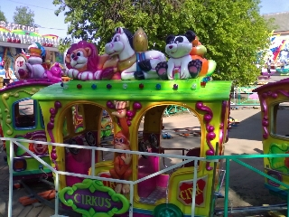

История создания праздника.
Фестиваль
детского творчества
«Золотая пчёлка» в нашем городе – это
несомненно праздник, который приобрел большую популярность в странах
СНГ и Европе.
Из года в год растет престиж и расширяется география
фестиваля, учредителями которого являются Министерство культуры
Беларуси, Могилевский облисполком, управление культуры облисполкома и
Климовичский райисполком.
Инициатором этого прекрасного фестиваля был Иван Андреевич Борщёв, в то
время работавший заместителем председателя Климовичского райисполкома.
Главной причиной зарождения фестиваля было
стремление наладить работу с детьми на более высоком уровне. В 1995
году наши ребята из дома пионеров учувствовали в детском фестивале
«Нотки над Бесядью», который проходил в г.п.
Хотимске. Приехали они тогда оттуда окрыленные и много рассказывали об
увиденном и услышанном.
Тогда и появилась заманчивая идея, которую Иван Андреевич Борщёв
согласовал в благотворительном Лайонс – клубе, одной из
программ деятельности которого и являлась поддержка талантливых детей.
Предложение было воспринято всеми правильно.
Обсудив детали, разработали программу проведения фестиваля,
посвященного Международному
дню защиты детей и пригласили в Климовичи на праздник в 1996 году
ближайших соседей – детские коллективы из Костюковичей,
Кричева и Славгорода – районов области, пострадавших от
аварии на Чернобыльской АЭС, и детский коллектив из российского
города-соседа Шумячи. Участникам и зрителям он понравился. Были и
первые победители.
В 1997 году было решено проводить фестиваль на более широком уровне. И стал вопрос: а как назвать наш фестиваль? Идею тогда подала директор районного Центра культуры Людмила Анатольевна Тимохович. Так и стал он «Золотой пчёлкой». И это не случайно, так как символом города Климовичи является герб с изображением пчелы.
В 1997 году фестиваль был уже региональным. На
праздник
приехали представители девяти районов Беларуси и России. Примечательным
был 1998
год, когда город принял очень талантливый, яркий коллектив из далекой
от нас Тулы.
Благодаря бывшему начальнику Управления культуры Могилевского
облисполкома Михаилу Григорьевичу Дорошкову наш
фестиваль из регионального в 1999 году получил статус областного, а в
2001 г. – Международного.
2001 год.
Первый Международный фестиваль детского творчества «Золотая пчёлка» проводился в год, когда ООН обьявила Десятилетие культуры мира и ненасилия в интересах детей. Праздник детства собрал около 500 участников. Были представлены все области Белоруссии и практически целиком Могилёвская область. Приехали делегации из Кишинёва (Молдова) и Шумячского района (Россия).
В субботу всех обьединил «Вечер дружбы», а в воскресение проходило праздничное шествие, а также состоялся гала-концерт, каждый номер которого зачаровывал зрителей. На площади Великого Октября собралось столько людей, что, казалось, не было свободного места.
2002 год.
Участников фестиваля (их было уже более полутысячи), гостей праздника Климовичи встречали обновленными и похорошевшими. Семь концертов дали в этот раз участники конкурса в сельской местности Климовичского района и три – за её пределами. Присутствовали на втором Международном фестивале председатель благотворительного обьединения «Помощь детям Чернобыля» региона Рейн-Нае Долорес Райнинг и посол Республики Молдова в Белоруссии Ион Чёрный.
2003 год.
Третий Международный фестиваль «Золотая пчёлка» проходил на протяжении трёх дней. Только прослушивание конкурсантов заняло 12 часов. Расширилось и представительство: к белорусским, российским и молдавским юным талантам добавились и украинские. Работу жюри возглавил ректор Белорусского государственного института проблем культуры В.П. Скороходов.
2004 год.
На этой «Золотой
пчёлке» 9 – летняя Ксения Ситник получила Диплом
первой степени, приз зрительских симпатий, а ещё огромную игрушку от
одной из
благодарных зрительниц.
Незабываемым зрелищем для всех остался и праздничный в
вечернем небе над городом,
а также выступления профессиональных коллективов из Минска –
ансамблей «Беседа»
и «Камерата».
2005 год.
В год 60 – летия Победы
советского народа над фашисткими захватчиками проходил V Международный
фестиваль. Присутствовавшим на празднике ветеранам Великой
Отечественной войны дети преподнесли цветы.
Впервые мы услышали колокольный перезвон. Со столь необычным,
высокого уровня номером выступали ребята из Тулы.
Председателем жюри фестиваля был композитор, народный артист
Республики Белоруссия Валентин Иванов.
Более 150 участников V Международного фестиваля детского творчества
«Золотая пчёлка» отмечены дипломами и подарками
жюри этого большого праздника музыки, песен, хореографии, живописи и
декоративно-прикладного искусства.
Присутствовал на празднике и вручал награды второй председатель
благотворительного обьединения «Помощь детям
Чернобыля» Штефан Бастине.
Но главным подарком для всех почитателей
«Пчёлки» стало известие о том, что следующий
фестиваль пройдет в Летнем амфитеатре, который построит в городе
местная власть совместно с областными и республиканскими ведомствами.
2006 год.
Настоящим фейерверком талантов блеснул шестой
по счету
Международный фестиваль детского художественного творчества
«Золотая пчёлка».
Юные дарования из Кыргызстана и Норвегии, Украины и Молдовы, Латвии и
России, а также нашей республики продемонстрировали свои способности во
многих жанрах искусства, к которым присоединилось и цирковое.
Гран-при в конкурсе музыкантов-исполнителей завоевал школьник
из Горок Владислав Калита.
Лучшим голосом «Золотой пчёлки» признан будущий
участник детского
Евровидения, юный житель г. Мозыря Андрей Кунец.
А зажигательным искусством танца жюри под председательством
композитора Валерия Иванова и многочисленных зрителей покорили
участники молдавского народного ансамбля танца
«Цэрэнкуца».
Дипломантами и лауреатами стали многие исполнители и коллективы, без
фестивальных подарков не остался никто.
2007 год.
В этом году VII
Международный фестиваль детского творчества «Золотая
пчёлка»
собрал более 900 юных талантов из 9 стран: Беларуси, России, Украины,
Молдовы, Латвии, Китая, Казахстана, Кыргызстана и Турции.
Открылся фестиваль на концертной площадке летнего амфитеатра в
центральном городском парке красочным театрализованным представлением.
Впервые в этом году состоялось детское карнавальное шествие и
выставка-ярмарка из Минска «Мир мёда и здоровья» с
участием пчеловодов Беларуси и России.
Необычные сладкие призы преподнёс таллантливым коллективам
генеральный продюсер
выставки-ярмарки Ю.А. Редьков. 30-килограмовую бочку мёда получили
гости из Татарстана,
50 кг замечательного продукта - танцевальный коллектив из Бобруйска
и 100 кг - делегация из Китая.
Кроме этого, были ещё специальные призы, учредителями которых
являлись отделение ОАО «Белагропромбанк» в г.
Климовичи, Могилёвский
облвидеопрокат и наш земляк – генерал-майор, советник
постоянного комитета Союзного государства В.В. Павлов.
В числе тех, кто награждён Гран-при на этом фестивале, была и
юный художник из г. Климовичи
Дарья Голикова.
Субботний вечер участники и гости фестиваля
провели вместе с компанией МТС – официальным партнёром VII
Международного фестиваля детского творчества «Золотая
пчёлка». Молодёжи всех девяти стран понравились выступления
Алексея Хлыстова, Анны Шаркуновой, DJ Lexa, Matrix. Очень обаятельный
ведущий не давал скучать зрителям, проводил конкурсы и
вручал подарки от компании.
Своеобразным подарком всем участникам и гостям фестиваля от компании
МТС стала карнавальная дискотека, которая состоялась в 19 часов в
городском парке.
2008 год.
VIII Международный
фестиваль
детского творчества «Золотая
пчёлка»
начался с приезда первых гостей – уже 27 мая в г. Климовичи
встречали делегацию из Казахстана.
В последующие три дня прибыли представители из Болгарии, Польши,
Румынии, Эстонии, Молдовы, Кыргызстана, Украины, России и разных
уголков Белоруссии.
В течении двух дней в Тимоновском сельском доме культуры и районном
Центре культуры проходили конкурсные прослушивания и просмотр
участников фестиваля в
хореографической и вокальной номинациях.
Жюри возглавлял композитор, народный артист Республики Белоруссия В.К.
Иванов.
В районном Доме ремёсел и краеведческом музее были представлены на суд
компетентного жюри работы декоративно-прикладного и изобразительного
искусства.
В
городском парке работало много выставок-продаж
замечательных изделий учащиеся
детской художественной школы и детской школы исскуств.
В торгвых рядах каждый день было многолюдно. Особым спросом пользовался
мёд «Монастырский»,
представленный на фестивале проектом «Мир мёда и
здоровья».
2009 год.
IX Международный
фестиваль детского творчества
«Золотая пчёлка» — светлый
незабываемый праздник
юных
дарований, традиционно проходит накануне Международного Дня защиты
детей и объединяет в свои ряды молодых танцоров, певцов, музыкантов и
художников из разных стран ближнего и дальнего зарубежья: России,
Украины, Молдовы, Латвии, Казахстана, Кыргызстана, Болгарии, Польши,
Румынии, Турции, Китая, Норвегии и, конечно, Беларуси.
Конкурсные выступления и концерты участников, конкурсы рисунков на
асфальте и на мольберте «Мой родны кут», конкурс на
лучшее сладкое изделие «Сладкие фантазии»,
выставки-продажи творческих работ мастеров декоративно-прикладного и
изобразительного искусства «Лавка чудес»,
развлекательные программы и подарки для детворы – все это
можно было увидеть в Климовичах с 28 по 31 мая.
Во время праздничного открытия IX Международного
фестиваля детского
творчества «Золотая пчёлка» его участников, гостей,
многочисленных зрителей приветствовали композитор, народный артист
республики, председатель фестивального жюри Валерий Иванов.
Право поднять флаг было предоставленно победителю фестиваля
«Золотая пчёлка» Дмитрию Рыжикову.
Участникам и гостям праздника были представлены танцевальные программы,
выступления воспитанников детских спортивных школ, игровые площадки и
аттракционы, развлекательные программы, выставка-ярмарка «Мир
мёда и здоровья», концерт мастеров искусств Беларуси,
экскурсии по достопримечательным местам Могилевщины.
На этом красочном и торжественном мероприятии вместе с участниками
фестиваля выступили лауреаты международных конкурсов из Турции Джем и
Джейден Гюрдал.
Порадовали всех пришедших в тот вечер в городской парк огненное шоу и
феерверк.
2010 год.
На X Международный фестиваль детского творчества «Золотая пчёлка» съехались юные таланты из Европы и Азии. Более тысячи исполнителей, свыше десятка номинаций.
В фестивале приняли участие гости из 18 стран: Армении, Беларуси, Бельгии, Болгарии, Казахствана, Кыргызстана, Латвии, Молдовы, России, Эстонии, Польши, Норвегии, Финляндии, ряда автономных республик. Причём шесть стран участвовали впервые.
В составе делегации из Германии было 14 девочек
— участниц
танцевальной группы «Табу»,
четыре руководителя и официальный представитель — депутат
городского совета г. Бинген господин Бастине Штефан.
Кроме того, приехали 10 членов благотворительной инициативы
«Помощь детям Чернобыля» региона
Рейн–Нае,
которая занимается организацией приёма детей
на оздоровление.
В пятый раз официальным партнером фестиваля
выступил оператор связи МТС.
В рамках фестиваля компания МТС пригласила в Климовичи группы
«Цвет Алоэ» и J:Mors. Послушать отличную музыку и
поучаствовать в веселых конкурсах, организованных ведущим программы
Дмитрием Санковичем, собралось множество желающих.
Музыкально-развлекательная программа от МТС вызвала огромный интерес и
внесла новые ритмы в размеренную жизнь города.
Конкурсные прослушивания проходили по таким номинациям, как солисты — народное пение, вокальные ансамбли — народное пение, вокальные ансамбли — эстрадное пение. Просмотр участников фестиваля проходил и по хореографическому искусству (коллективы эстрадного танца и народно–сценического танца). Конкурсный просмотр работ по декоративно-прикладному и изобразительному искусству принимали детская художественная школа и районный краеведческий музей. В их залах открылись выставки "Академия детского творчества" и "Волшебные краски детства".
Надо было видеть, как тепло и сердечно прощались мальчишки и девчонки, обмениваясь адресами, телефонами, сувенирами. Дни, проведённые вместе, стали для них ярким, запоминающимся событием. И многие убедились, что язык дружбы прост и понятен, какими бы дальними ни были расстояния между городами и странами.
2011 год.
XI
Международный фестиваль детского творчества
«Золотая пчёлка» начался в областном
центре.
В Могилёве 25 мая зарубежным делегациям
организовали обзорную экскурсию по Могилёву, которая включала в себя
посещение Советской площади, ратуши, площади Звёзд, улицы Ленинской,
Свято-Никольского монастыря, Буйничского поля, зоосада. Затем
творческий подарок участникам фестиваля преподнёс заслуженный
любительский коллектив Беларуси театр-студия
«Радуга».
В четверг утром участники фестиваля отправились в
г. Климовичи, часть из них — в дизель–поезде.
Маршрут
этот был специальным и носил название «Поезд
дружбы». Время в пути пролетело быстро, ибо в вагонах звучали
песни, шутки, загадки, звонкий детский смех, разноязычная речь
– русская, украинская, литовская, киргизская,
китайская…
В поезде с зарубежными участниками фестиваля работали две команды
учащихся Могилёвского государственного колледжа искусств. Ещё народный
ансамбль «Вясёлка» знакомил участников фестиваля с
белорусскими песнями.
2012 год.
XII Международный
фестиваль детского творчества
«Золотая пчёлка», на который
собрались юные дарования из 9 стран: Беларуси, Украины, России, Латвии,
Литвы,
Эстонии, Молдовы, Казахстана и Таджикистана, проходил в нашем
городе в
период с 30 мая по 3 июня 2012 г.
Представители этих стран с завидным постоянством приезжают в наш город,
чтобы порадовать хозяев и гостей своим творчеством.
Жителей и гостей нашего города во время детского
праздника ожидала масштабная культурно–развлекательная
программа. Во
время праздничного
концерта «Радуга детства» прошли творческие
презентации
стран–участниц фестиваля.
Торжественное открытие фестиваля состоялось 1 июня. Этот день начался с
прослушивания солистов и вокальных ансамблей народного плана, а также
просмотра выступлений хореографических коллективов, творческих работ
юных художников и мастеров.
В вечерней программе был концерт оркестра народных инструментов им. Л.
Иванова областной филармонии при участии молодых талантов Могилёвщины
—
лауреатов международных и республиканских конкурсов.
Порадовали как детей, так и взрослых шоу мыльных пузырей, лазерное шоу
и праздничный фейерверк.
2013 год.
XIII Международный
фестиваль детского творчества
«Золотая пчёлка», являющийся
многонациональным праздником творчества
юных исполнителей и занимающий значительное место в культурной жизни
Республики Беларусь прошёл в нашем городе с 29 мая по
2 июня. Фестиваль собрал исполнителей и коллективы из Беларуси,
Казахстана, Латвии, Литвы, Молдовы, России, Словакии, Турции, Украины,
Финляндии, Эстонии. Среди них
учащиеся детских музыкальных и художественных школ, детских школ
искусств, воспитанники художественных студий и кружков, действующих в
учреждениях культуры, образовательных школах, гимназиях, колледжах, а
также в школах-интернатах и детских домах для детей-сирот.
В первый день фестиваля зарубежные делегации побывали в городе
Могилёве, где для ребят была организована
культурно–развлекательная
программа с обзорной экскурсией по областному центру, концерт
«Молодые таланты Могилёвщины» оркестра народных
инструментов имени Л. Иванова с участием лауреатов международных и
республиканских конкурсов, стипендиатов, а на следующий
день все отправились в город
Климовичи. В этот день юные артисты приняли участие в концерте
«Мы — белорусы», а также вечере дружбы и
развлекательной танцевальной программе «Диско-данс»
с участием лауреатов фестиваля «Золотая пчёлка»,
солиста УК «Могилевская областная филармония»
Алекши Чёрного, фольк-шоу балета «Альянс».
2014 год.
XIV
Международный фестиваль детского творчества
«Золотая пчёлка» в г. Климовичи
проходил в восемнадцатый раз под девизом Года гостеприимства и
празднования 70-летия освобождения Республики Беларусь от
немецко-фашистских захватчиков. Программа была насыщена самыми
различными
музыкальными, культурными мероприятиями и конкурсными проектами. Формат
музыкального праздника определен четырьмя основными тематическими
днями: «Дзень беларускай гасціннасці»,
«Дзень сяброўства», «Дзень замежных
культур» и «Дзень дзяцінства».
Для гостей мероприятия в центре города, в районе площади 50-летия
Великого Октября,
развернулась масштабная выставка-продажа белорусских предприятий,
производящих товары и продукты питания для детей, центром которой стала
деревня «Домочай».
ОАО
«Булочно–кондитерская компания
«Домочай» (Могилёв) предлагал широкий ассортимент
сладостей. Традиционно работала театрализованная фольклорная
выставочно–торговая экспозиция «Клімавіцкая
гасцёўня»,
была организована дегустация блюд белорусской национальной кухни,
продажа
сувенирной продукции, работа игровых аттракционов.
Все желающие могли приобрести сувениры, посетить игровые аттракционы,
попробовать блюда национальной кухни. Вечером гостей праздника ждали
обширные концертная и конкурсно–танцевальные программы.
XV Международный фестиваль детского творчества «Золотая пчёлка».
XV Международный фестиваль детского творчества
«Золотая пчёлка» проходил в городе Климовичи с 28
по
31 мая 2015 года.
 В
этом году в музыкальном фестивале приняли участие
исполнители и
коллективы из 12 стран (Беларусь, Армения, Казахстан, Кыргызстан,
Молдова, Россия, Латвия, Литва, Турция, Узбекистан, Украина, Эстония).
Конкурс
проводился в двух возрастных категориях - младшая
(9-12 лет
включительно), старшая (13-16 лет включительно) в следующих жанрах по
номинациям:
– «Вокальное искусство»
– номинации: солисты, ансамбли (дуэт, трио, квартет и др.)
народного и эстрадного пения;
– «Хореографическое искусство»
– номинации: хореографические коллективы
народно-сценического, эстрадного танца;
В рамках музыкального праздника прошли четыре тематических
дня:
«Дзень сяброўства», «Дзень нараджэння
фестываля дзіцячай творчасці “Залатая
пчолка”», «Дзень моладзi “Мы
пачынаем свой шлях”», «Фестывальны
дзень».
На юбилейный фестиваль были приглашены звёзды белорусского эстрады
Алёна
Ланская, Иван Буслай и другие. В состав жюри вошли известная
армянская балерина Жаклин Сархашан, художественный руководитель
национального академического народного хора имени Цитовича Михаил
Дриневский, мастерство танцевальных коллективов оценивал Расэн
Богданов,
председатель федерации фольклорных групп Болгарии.
Гостей праздника ждали театрализованные
фольклорно-выставочные
экспозиции «Сардэчна запрашаем» с участием
творческих коллективов, мастеров декоративно-прикладного творчества,
концертная программа «Карагод сяброў»,
празднично-выставочная экспозиция «Беларускі
кірмаш», где были представлены предметы белорусского быта и
регионального костюма, мастер-классы, тематические фольклорные
программы творческих коллективов Могилевской области.
В пятницу в городском парке не смолкала музыка. Участники
экспозиции «Беларускія гасцёўні», гости из соседних
районов, зазывая прохожих отведать национальные блюда со своих
праздничных столов, пели весёлые песни и частушки под баян и гармонь.
Несмотря на проливной дождь, праздничное открытие «Золотой
пчёлки» — «Бал — Виват,
фестиваль!» началось вовремя.
Площадь Великого Октября и прилегающая к ней территория парка были
полны зрителей. Ни жителей, ни гостей нашего города не испугало
ненастье.
Участников и гостей фкстиваля приветствовали заместитель министра
культуры Республики Беларусь Василий Черник, председатель Могилевского
областного Совета депутатов Анатолий Исаченко и председатель
Климовичского районного исполнительного комитета Василий
Захаренко.
На мероприятии также присутствовали помощник Президента
Республики
Беларусь — главный инспектор по Могилёвской области Геннадий
Лавренков, председатель правления Белкоопсоюза Валерий Иванов,
руководитель представительства губернатора и правительства
Нижегородской области в Республике Беларусь Сергей Петров, начальник
особого отдела Русского бюро международного комитета по борьбе с
организованной преступностью, терроризмом и коррупцией,
генерал-лейтенант Василий Чемисов, глава Администрации муниципального
образования «Шумячский район» Александр Глушков,
начальник управления образования Могилёвского облисполкома Владимир
Рыжков, начальник главного управления идеологической работы, культуры и
по делам молодежи Могилёвского облисполкома Анатолий Синковец, а также
руководители структурных подразделений Могилевского облисполкома,
Климовичского райисполкома и члены жюри.
В честь семидесятилетия Победы в Великой Отечественной войне
представители творческих делегаций возложили цветы к братской могиле в
городском парке. После этого до самого позднего вечера юные артисты
дарили зрителям свои яркие и зажигательные музыкальные номера.
Завершился второй день фестиваля праздничным фейерверком.
В субботу прошла конкурсная программа «Мини-мисс
«Золотая пчёлка — 2015». В этом году в
ней принимали участие воспитанницы дошкольных учреждений города
Климовичи.
Звания «Мини-мисс «Золотая пчёлка»
удостоена воспитанница яслей-сада «Теремок»
Елизавета Солодкова.
Титул «Мини-мисс Очарование» был присвоен
воспитаннице яслей-сада «Солнышко» Варваре
Дроздовой, «Мини-мисс Кокетка» —
воспитаннице яслей-сада «Елочка» Анастасии
Шлыновой, «Мини-мисс Артистичность» —
воспитаннице яслей-сада «Ромашка» Ксении Суворовой,
«Мини-мисс Элегантность» — воспитаннице
яслей-сада «Светлячок» — Карине Вебер.
Всем участникам конкурсной программы от общественного объединения
«Белорусский фонд мира» были вручены подарки.
Вечером вниманию зрителей была представлена концертная программа
«Подарок от МТС».
Во время фестиваля в городском парке была организована
выставка-продажа
творческих работ мастеров декоративно-прикладного искусства
«Дзівосная скарбонка», выставка-продажа работ
мастеров ДПИ и ИЗО Могилевщины «Маладосць. Натхненне.
Творчасць юных».
Впервые наш фестиваль
посетили члены рыцарского клуба
«Барысфен» из Могилёва.
Участники театрализованной программы «Путешествие в
Средневековье!» были одеты в костюмы 15 века. Желающим
предлагалось не только посмотреть постановочные бои, но и самим
примерить на себя плетеную кольчугу, шлём с забралом, а также
пострелять из лука, метнуть копье.
Нужно отметить, что в этом году на «Золотой пчёлке»
было как никогда много различных аттракционов, торговых палаток с
сувенирами.
В воскресное утро состоялась церемония вручения дипломов участникам
фестиваля.
После праздничного шествия участников фестиваля из двенадцати стран по
центральным улицам города в амфитеатре прошел заключительный
гала-концерт «Залатыя фарбы фестываля».
Дипломами 1 степени были награждены:
– в номинации «Эстрадное пение»
— Ирина
Драгу (Молдова), Злата Рыжикова (Беларусь, г. Могилев), Султанов
Асадбек Ажинияз Улы (Республика Каракалпакстан (Узбекистан);
– в
номинации «Вокальные ансамбли — эстрадное
пение» — вокальная группа
«Радуга» (Беларусь, г. Могилев);
– в номинации «Народное пение»
— Полина
Муравицкая (Беларусь, г. Минск), Зоряна Кунь (Беларусь, г. Минск);
– в
номинации «Вокальные ансамбли — народное
пение» — фольклорный ансамбль
«Матрёна» (Республика Карелия, Российская
Федерация);
– в номинации «Коллективы эстрадного
танца»
— танцевальная группа «Викторята»
(Российская Федерация);
– в номинации «Коллективы народно-сценического
танца»
— образцовый хореографический ансамбль танца
«Шаттык» (Кыргызстан), ансамбль танца
«Армелад» (Армения).
Наивысшей
награды фестиваля — Гран-при удостоены:
вокалистка Стефания Соколова (Беларусь, г. Минск), вокальная группа
«Жулдыздар» (Казахстан), образцовый ансамбль танца
«Каранфил» (Молдова).
Ученица ГУО «Климовичская детская школа искусств»
Елизавета Сапожникова награждена Дипломом 3 степени. Также Диплом 3
степени и специальным призом от предприятий
«Древвест» и «Экотехнопром»
отмечен театр танца «Здорово» ГУО
«Климовичская детская школа искусств».
Воспитанник ГУК «Централизованная клубная система
Климовичского района» Дмитрий Валявский награжден специальным
призом от Могилёвского областного отделения общественного объединения
«Белорусский Фонд мира».
Также специальных призов были удостоены:
от частного унитарного предприятия «Концерт-сервис»
— учреждения культуры Климовичского района; от Могилевского
бюро холдинга «Советская Белоруссия» —
Паола-Элизабет Джим (Украина), Тимофей Григорьев (Российская
Федерация).
«Золотая пчёлка» собирает друзей.
Очень отрадно, что, несмотря на принятое решение проводить
Международной фестиваль детского творчества «Золотая
пчёлка»
1 раз в два года (фестиваль в 2016 году не проводился), организаторы
фестиваля решили не нарушать традиций и организовали региональный
праздник, на котором по традиции представлялось детское творчество.
Мероприятие собрало вместе более 400 участников. В Климовичи показать
свои музыкальные, вокальные и хореографические способности приехали
коллективы из Добруша, Дрибина, Костюкович, Краснополья, Кричева,
Славгорода, Хотимска, Черикова, Чаус.
Помимо белорусских делегаций мы
также встречали гостей из России и Армении. Своими выступлениями нас
порадовали ансамбль «Веселая карусель» МБУ ДО
«Суражская детская школа искусств им. А. П.
Ковалевского» и танцевальная группа
«Арег» Армянского детско-юношеского культурного
Союза.
Программа мероприятий началась с праздничного шествия. В ярких красивых
нарядах участники регионального фестиваля «Золотая
пчёлка» собирает друзей» прошли праздничной
колонной по центральной улице города.
После этого в амфитеатре состоялся
гала-концерт участников праздника.
Песни и танцы юных дарований доставили зрителям немало приятных минут.
Всем творческим коллективам и каждому сольному исполнителю были вручены
дипломы
участника праздника «Золотая пчелка» собирает
друзей» и мягкие игрушки.
Специальный
приз от Белагропромбанка получила воспитанница Климовичской детской
школы искусств Анастасия
Поборцева.
В конкурсе рисунка на асфальте в своих
возрастных категориях дипломами I степени были награждены Настя
Шурухайлов, Владислав Сапранков, Виктория Гоманова, дипломами II
степени отмечены Мария Сапранкова, Виктория Кустова, Тамара Сомова,
дипломы III степени получили Варвара Дроздова, Арина Юхневич, Татьяна
Семченко.
Очень много мальчиков и девочек изъявили желание принять участие в
соревновании по велорейсингу. Страсти на
специально подготовленной трассе кипели нешуточные.
В результате
— лучшее время по прохождению дистанций и, соответственно,
1-ые места (согласно своим возрастным категориям) у Павла Сотченко,
Полины Судиловской, Егора Егорченко, Елизаветы Демиденко, Артёма Ореха,
Анны Скоркиной. 2-ые места завоевали Иван Вяткин, Ольга Осмоловская,
Даниил Тарасенко, Павел Келбусов, Дарья Андреенко. 3-и места заняли
Евгений Петроченко, Назар Егорченков, Егор Гриньков, Елизавета
Павлюченко. Победители были отмечены дипломами соответствующих степеней
и небольшой суммой денежного вознаграждения.
А самые маленькие
участники соревнования, воспитанники детских садов,
которые проходили дистанции на трёхколесном велосипеде были награждены
подарками.
За
звание «Мистер «Золотая
пчёлка» боролось 5 мальчиков, столько же девочек претендовало
на титул «Мисс «Золотая пчёлка». Юные
конкурсанты рассказывали о себе и своих увлечениях, пели, танцевали,
демонстрировали наряды из природного материала.
По результатам всех
конкурсов наибольшее количество баллов среди девочек набрала Ксения
Барсукова, она и была удостоена звания «Мисс
«Золотая пчёлка»; среди мальчиков победителем вышел
Ростислав Рыськов и у него звание «Мистер «Золотая
пчёлка».
Титулы «Мисс Элегантность» и
«Мистер Элегантность» присвоены, соответственно,
Анастасии Напреенко и Захару Короткому.
Титул «Мисс
Очарование» получила Елизавета Ионаш, титул «Мистер
Очарование» — Артём Маслов.
Самыми артистичными
признаны Мария Курлукова и Евгений Дубровинский.
Титульная лента
«Мисс Фантазия» была повязана Александре
Тихоновской, а лента «Мистер Фантазия» —
Святославу Серякову. Всем юным участникам были вручены подарки.
Вечером в амфитеатре состоялась концертная программа, подготовленная
учреждениями образования района, а также концерт «Майские
звёзды» поставленный силами самодеятельных артистов районных
центров культуры Климович и Кричева.
На протяжении всего дня в городском парке работали тематические
площадки учреждений образования и культуры, проходила выставка-продажа
работ взрослых и юных мастеров декоративно-прикладного и
изобразительного искусства. Районная детская библиотека организовала
выставку детских книг «Книжный остров радости».
Районный
краеведческий музей предоставил вниманию гостей праздника стенд с
уникальными фотографиями, на которых запечатлена Климовщина IX
—
XX в.в. «Город, которого нет», а также стенд со
снимками,
отображающими историю «Золотой пчёлки» —
«От
фестиваля к фестивалю».
С утра до позднего вечера работали
аттракционы и торговые павильоны.
Дорогие друзья!
Приглашаем
вас принять участие в Международном фестивале детского творчества
«Золотая пчёлка», который состоится с 1 по 4 июня 2017 года в г.
Климовичи.
Более 700 участников из восьми стран выступят на XVI Международном фестивале детского творчества «Золотая пчёлка».
Музыкальный праздник соберёт исполнителей и коллективы из Беларуси, Кыргызстана, России, Румынии, Сербии, Узбекистана, Украины, Финляндии.
Традиционно конкурсная программа пройдёт в двух возрастных категориях: младшая (9-12 лет) и старшая (13-16 лет).
Прослушивания и просмотры будут проводиться по номинациям: вокальное искусство (народное, эстрадное пение), хореографическое искусство (народно-сценический, эстрадный танец).
Свои таланты участники продемонстрируют не только зрителям, но и авторитетному международному жюри, в состав которого войдут ведущие деятели культуры Беларуси,
ближнего и дальнего зарубежья.
В нынешнем году фестиваль расширит формат, увеличив количество фестивальных площадок для отдыха.
Помимо состязательной составляющей участников и гостей ожидают различные конкурсы, в том числе рисунка на асфальте.
Завершающими аккордами «Золотой пчёлки» станут праздничное шествие по ул.Советской, торжественная церемония награждения победителей и гала-концерт в городском парке.